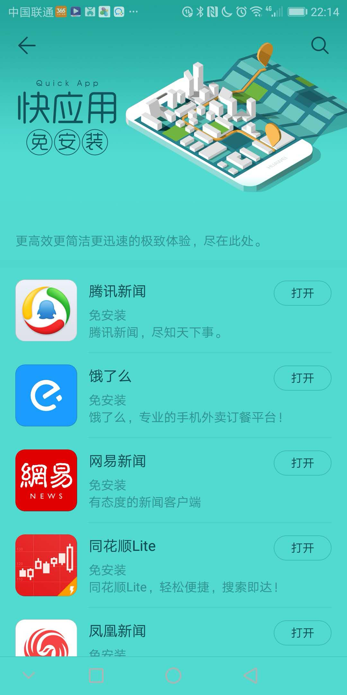
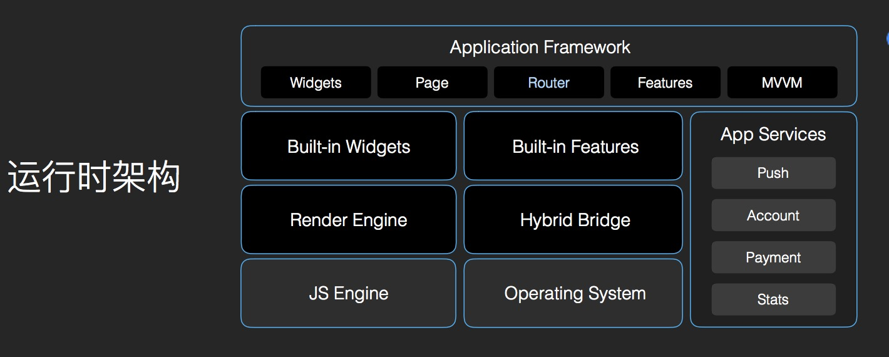

快应用
Quick App ～ 基础篇
分享人：zhangshibiao
分享人：zhangshibiao
3.20 😄
快应用是移动互联网新型应用生态，由十大厂商联合推出与手机系统深度整合，为用户提供更加场景化的体验。
实质上它并非新鲜事物，类似于微信的小程序、小米的“直达服务”、魅族的“快捷应用”，用户不用安装应用，即点即用
快应用是移动互联网新型应用生态，由十大厂商联合推出与手机系统深度整合，为用户提供更加场景化的体验。
无需下载绝逼是扯淡快应用具有灵巧轻便的特点，可在应用商店、
浏览器、全局搜索、负一屏等位置推广，各厂商快应用入口不同，具体位置请在手机端查看. 官方宣称：覆盖10亿设备，国内的主流品牌手机已支持快应用框架
竞争？ 入口？ 手机桌面
微信上线小程序和通过应用市场进行发包没什么本质区别，分发市场。
手机厂商为此不仅失去了应用分发的价值，也被截断了预装和广告营销的红利
请打开安卓边界查看快应用
查看我们编译等build 包会发现对应的都是js文件，粗略看下，会把template/css/ 做解析映射成以json形式记录下来，js逻辑以object 实行导出，template /css => render ， js => JS Engine /Hybrid Bridge
开发入门非常简单，难在文档并不是很详细，没有官方各个组件使用demo，而且我们习惯的css 用起来在quick 里用起来并不是那么的爽，坑很多，可以看咱们之后的demo，后续会补充坑在READEME中
小程序／快应用 / 原生／h5 的对比
| 平台／能力 | 快应用 | 小程序 | pwa | h5 | 原生 |
|---|---|---|---|---|---|
| 系统能力 | 支持 | 部分支持 | 几乎不支持 | 不支持 | 支持 |
| 跨平台（ios/android） | 大部分安卓平台 | 支持 | 支持 | 天然支持 | 不支持 |
| 开发效率(a/b/c) | <b | b | a | a | c |
| 包大小限制 | 1M | 4M | 无限制 | 无限制 | 无限制 |
| 用户体验（a/b/c） | b | b | c | <=c | a |
| 开发体验（a/b/c） | < b ～文档／demo／社区 | b | a | a | c |
| 传播能力... | |||||
| 离线能力 | 支持 | 支持 | 支持／兼容性 | 同pwa | 支持 |